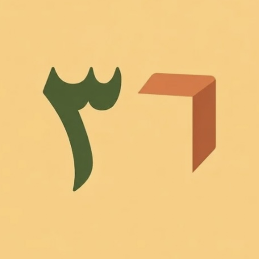

And You, the Horseman Who Cries “Patience!”
And you, the horseman who cries “Patience!” … when speech and neighing alike have died away
Reflections on the Quran and Sunnah, psychological, social, intellectual and media essays, Corner 36, and poems.

Recent articles we translate and reshape our own way! In collaboration with the Creative Forum Cultural Club
And you, the horseman who cries “Patience!” … when speech and neighing alike have died away
 Reflections on the Quran & Sunnah
Reflections on the Quran & Sunnah
Leave them to do what they do: the blocking, the rebuffing, the scheming, the shutting out — all by the will of Allah! And none can lift it but Him!
(And what is that in your right hand, O Moses?) He asks, though He, Glorified and Exalted is He, knows it better than Moses himself — yet He asks in order to put him at ease! The Lord, the Exalted, wanted Moses, peace be upon him, to feel at home in the conversation before surprising him with the weighty mission (Go to Pharaoh. Indeed, he has transgressed)! Imagine if He had opened the conversation with that command! Moses would have sensed apprehension within himself and felt estranged! But He wished to set him at ease first, so He asked him about the staff — a staff He knew, and could see in his right hand.
1- The forbidding of tears over what lies ahead: what Ibn al-Qayyim called “the weeping of fear” (Zad al-Ma’ad).
 Corner 36
Corner 36
Communication is the easiest skill of all — or so you think? Yet the interview published in Harvard Business Review, titled: How AI Is Changing Communication: Weighing Efficiency with Efficacy.
When Qaylah (may Allah be pleased with her) lost her son, she wept before the Messenger of Allah ﷺ and told him of all the responsibilities his death had left on her shoulders:
I have a piece of advice, precious and essential: don't tie what is decreed for you to your faith, or its strings will start to tremble.
The inner, psychological sensor: “Sin is what wavers in the chest.”
Dr. Saeed Hamza, an expert in Quran memorization, says in his book and courses "The Five Fortresses" that alongside your daily portion of reading, you need a daily portion of listening to the Noble Quran: no less than 30 minutes a day, roughly 41 verses, or say four to five pages, half a juz', a hizb.
In a podcast episode, the guest, a chef, recalls that as his fame grew, he began to want a homely, family feel in the frame, after years of standing alone in the lens,
It is in the very nature of human perception to magnify the negative outcomes of the bad experiences that befall us.
The lesson was so hard that even its teacher told us it was not easy to learn.
Had my Lord willed, I would have been Qays ibn Khalid;
Similarity wraps us in a sense of familiarity, though in the clever it stirs a faint suspicion; difference, on the other hand, rings far more true.
You lose your mind's power to analyze, to decode, to understand, and to solve problems
(And speak to people good [words])
([Dhul-Qarnayn] said, “This is a mercy from my Lord”)
To those who message me privately (with campaigns to boost followers and likes)
The complex number a+bi is made of two parts:
The research question is no longer why people delete their social media accounts, but why they try to get them back 100 days after deleting them ?
Identity gives us steadiness and stability, shelter and safety; yet in the very same measure, it keeps us from seeing the truth
Now then, friends, let's talk!
The Most Merciful, the Especially Merciful opens Surah Ash-Shu'ara in the most dazzling way:
The Prophet ﷺ loved this line of poetry and would often repeat it; it is by Tarafa ibn al-Abd:
The end of the surah is a prelude to its beginning!
You see this idea everywhere: that good tidings will not come while your heart is full of fear (And when the fright had left Abraham and the good tidings had reached him)
The past does not cling to a person — not by sacred law, not by reason, not by his present state: this day of yours, and all you live in its new light, is you.
Imagine with me a rope drawn tight around your chest, and drawn with wisdom.
If there were one way to prove the truth of the Quran, and the soundness of every vowel and every letter in it, that way would be repetition!
Connect with the child first: show him your love, for instance, and your encouragement, and ask him about his day. Only then give your direct advice!
With your children, don't be the preacher while they sit as your audience, as though you were Richard the war orator!
There is a complete and perfect harmony between Surat Al-A'la, Ash-Shams and Al-Layl: each moves step by step from the creation of the heavens and the earth, to the creation of man, to the human soul, which then splits into two kinds according to how it strives to purify itself; then come the two paths, guidance and misguidance, laid out plainly, and where each path leads in this world and the Hereafter.
True upbringing is supportive and responsible, never indulgent.
She tells me she was lying in a hospital bed, and that the woman beside her turned her Bluetooth speaker up loud with Surah Al-Baqarah and the ruqyah, and that for two, three days she could not sleep because of it.
Educators say that when a child screams, disobeys and rebels, the best thing you can do is: 1- draw close to him physically and rest your hand on the back of his head (this softens him and calms the lower brain, which governs emotions and reactions) 2- then call him by his name (this wins his affection and warmth, so he is readier to accept the message) 3- then tell him the behavior he ought to show.
For Gustave Le Bon, the rule of the human mind is to lead it from the composite to the abstract.
I read the book (The Spirit of Education) by the French thinker Gustave Le Bon
All through Surah Yusuf, one refrain: Knowing, Wise.
(The Most Merciful of the merciful): throughout the Quran, this name is bound up with reconciliation between brothers and with drawing together those who have grown apart.
(Whatever is in the heavens and earth exalts Allah, and He is the Exalted in Might, the Wise (1) His is the dominion of the heavens and earth. He gives life and causes death, and He is over all things competent (2) He is the First and the Last, the Ascendant and the Intimate, and He is, of all things, Knowing (3) It is He who created the heavens and earth in six days and then established Himself above the Throne. He knows what penetrates into the earth and what emerges from it and what descends from the heaven and what ascends therein; and He is with you wherever you are. And Allah, of what you do, is Seeing (4) His is the dominion of the heavens and earth. And to Allah are returned [all] matters (5) He causes the night to enter the day and causes the day to enter the night, and he is Knowing of that within the breasts (6) (Al-Hadid)
The lightning in Surah Al-Baqarah stands for the proofs of the Quran, in His words (The lightning almost snatches away their sight) (al-Tafsir al-Muharrar)
"It is authentically reported from the great Successor Mujahid ibn Jabr:
The psychological advice that says "Don't wait for your mood and feelings to improve; just start, and get to work anyway" is both right and wrong!
Some recite in slow, measured tartīl; if they hurried, all the joy and delight would drain out of it, so they keep a small daily portion and draw great joy and delight from their tartīl.
Reading many pages does not stand in the way of reflection and understanding.
PubMed Central (PMC), the research archive of the U.S. National Institutes of Health (NIH), has published a study that brings together strong, reliable evidence on the effect of the Noble Quran on mental and physical health. It is titled:
So I wanted to share it, along with a few thoughts of my own:
Creative ways to understand the Quran (mix them up, and taste the delight of understanding and reflection):
The people of Allah catch the scent of hearts from miles away, and they feel it in their own hearts as a contraction or an expansion.
Surat al-Ankabut opens with the struggle against the self (And whoever strives only strives for [the benefit of] himself. Indeed, Allah is free from need of the worlds (6) (Al-Ankabut)
Reciting and memorizing the Quran matter because they bind the heart to the Most Merciful; the love of Allah, Mighty and Majestic, is won through abundant remembrance, and whoever loves something speaks of it often.
The frontal lobe, the seat of logic and rational decision-making: neuroscience has found that it grows the more a person masters his emotions and feelings. It expands through will and choice, just as it expands and grows each time we feed it something useful.
The righteous friend wants you for your Lord, not for himself,
I know! You live in dread of slipping after you have walked straight; it buzzes in your head like a bee, on and on… When that thought comes, do nothing and do not overthink it; just say: “O Changer of the hearts, make my heart firm upon Your religion.”
Imagine setting your heart on standing, on a lofty and praiseworthy name, among the dwellers of heaven!
To have the light of Allah reach the heart of His believing servant, you do not need endless prayer and fasting; it is simpler than that. These three are enough for you:
One of the leading voices in reflecting on the verses (and one I love to listen to) was asked by the presenter: Why, in Surat Ar-Ra'd, do we find (Indeed in that are signs for a people who give thought), and in An-Nahl (Indeed in that is a sign for a people who give thought), and why (Indeed in that are signs for a people who reason) in both surahs?
One of the wisdoms behind the rites Allah prescribed for Hajj is to remind us of the Day of Gathering. That is why He closed the verses on Hajj in Surat al-Baqarah with this very purpose:
How often has fame left injustice in its wake: a person is drawn into some quarrel, and either he is wronged or he wrongs.
You might describe a person as a moon; yes.
How the verses hold together: when He closed the verse on divorce with (And do not forget graciousness between you..), He was reminding us that the graciousness shown between people is not to be forgotten but kept alive by remembering it. Then He reminded us not to forget the right of the Creator, Glorified and Exalted is He, and to guard the prayers, for His is the greatest grace of all (Maintain with care the [obligatory] prayers and [in particular] the middle prayer…), until He said (then remember Allah [in prayer], as He has taught you that which you did not [previously] know).
"Whoever knows Allah, what is there left for him not to know?
(He said, "Indeed, Allah will be testing you with a river") and they split into three groups:
(And recite to them, [O Muhammad], the news of him to whom we gave [knowledge of] Our signs, but he detached himself from them; so Satan pursued him, and he became of the deviators) A parable Allah has struck for the one who was given the Quran and its clear proofs, yet did not act upon it. What made him swerve from guidance: following his desire in place of the Book, and preferring this world to the Hereafter.
Among the truths of spiritual knowing: whatever fancies, schemes, and wishes you turn your mind away from come walking toward you in reality, easy and unforced —if Allah wills—.
From the Messenger of Allah ﷺ, who said: “Be kind to your children, and perfect their manners.”
A righteous dream is a choosing from Allah the Exalted: He singles you out from among all His creation and lets you see it.
It is ingratitude for a blessing to forbid it to yourself when Allah has made it lawful.
Karāmah, the wonder granted to the righteous, is not that He folds up for you the distances of the earth, the lands in all their length and breadth.
Listen to a surah you love, in the voice of a reciter you love — whether or not he has mastered tajweed, because the aim here is to build love between you and the Quran.
And, as its counterpart: (And thus have We sent the Qur'an down as verses of clear evidence and because Allah guides whom He intends)
I have always wondered: what does it mean that Allah, Glorified and Exalted is He, describes the Quran again and again as good tidings and mercy? Things are known by their opposites, and the opposite of mercy is torment. In more than one place, Allah the Exalted speaks of the inner torment and pain that befall those who do not follow al-Furqan, the Criterion, the Noble Quran. In Surah Al Imran He says: (And He revealed the Qur'an. Indeed, those who disbelieve in the verses of Allah will have a severe punishment). The exegetes explain that this severe punishment is the torment of the soul that makes the breast grow tight; that is why He called it severe: the torment of the soul, with all its anguish and pain. And in Surah Al-An'am: (So whoever Allah wants to guide - He expands his breast to [contain] Islam; and whoever He wants to misguide - He makes his breast tight and constricted as though he were climbing into the sky. Thus does Allah place defilement upon those who do not believe). As for defilement (al-rijs): some said it is Satan, and this is the stronger view; others said al-rijs is torment, meaning the inner torment of one whose breast never opens, no matter what he does or achieves in this life: there is always that torment, that pain. But whoever follows guidance, believes, and holds fast to the Noble Quran, for him the Quran is what our Lord, Glorified and Exalted is He, said it is: a mercy for the believers, through which the believer is shown mercy.
(We will make you recite, [O Muhammad], and you will not forget, except what Allah should will): proof that forgetting, and its opposite, remembering, lie within the will of Allah the Exalted and are part of His written decree. It also shows that forgetting is from Allah's decree, so whoever forgets should be content and not lose heart over it.
“Allah does not wrong a believer in a single good deed: he is rewarded for it with provision in this world and recompensed for it in the Hereafter. As for the disbeliever, he is fed for it in this world, so that when the Day of Resurrection comes, he has no good deed at all.” Sahih Muslim
The love of the calf mingled with the very lining of their hearts, as water seeps into the depths of the body; and this because they denied the truth.
When their prophet told the Children of Israel that Talut had been raised up over them as king, they marvelled: how can kingship be his, when he is poor, with neither lineage nor wealth, and we are the ones descended from the line of kings!? So he told them that what fitted him to be chosen was "knowledge and power" (and has increased him abundantly in knowledge and stature). Knowledge comes first, for its surpassing honour; and stature is the strength that fits him for war, that is, any power or gift with which Allah has graced a person.
(Here you are loving them but they are not loving you)
(And whatever good you do – Allah knows it): why did He hold back the word (or evil?)
(Satan threatens you with poverty …) and right after it comes (He gives wisdom to whom He wills..)
In Al-Baqarah: (Or do you think that you will enter Paradise…. until [even their] messenger and those who believed with him said, "When is the help of Allah?" Unquestionably, the help of Allah is near) and then comes (They ask you, [O Muhammad], what they should spend..)
In Makkah they cursed them and tormented them, until the very sight of the Kaaba came to hurt the Muslims! How could we perform Hajj and ʿUmrah, aching as we look upon the places of torture and the corners of cruelty!? And when Allah knew what lay in their souls, He said to them:
The believer in this world is like the mukātab slave (and we are all slaves of Allah): a slave whose master has agreed with him on a fixed sum of money, and the moment he pays it in full, his master sets him free.
Encouraging the self: it appears in His words (And the example of those who spend their wealth seeking means to the approval of Allah and assuring [reward for] themselves)
And among the people is he who says, "Our Lord, give us in this world," and he will have in the Hereafter no share: this is a warning to the believer not to be like the disbeliever, who asks for nothing but this world and has no faith in the Hereafter.
Among the meanings of patience: fasting!
Again and again the Quran says (guidance and good tidings); so what is the secret behind this order?
A task I always hand my mind: untying emotional associations and ties to the past!
The times when worship is forbidden are the examinations of the devoted and the trials of those who love: will they have the patience to put off their worship until the hour has passed?
Why did he pair the man of wealth with the man of the Qur'an when speaking of envy?
Among the names of the Qur'an that Fakhr al-Din al-Razi lists is al-Qaṣaṣ, “the Narratives” (We relate to you, [O Muhammad], the best of stories), so named because the Qur'an's traces and verses must be followed, tracked step by step the way skilled trackers read a trail, until one becomes adept at it (And she said to his sister, "Follow him")
When a soul reaches its perfection, its love for things and for people becomes pure of whims and free of mere emotion.
By branching out your bond with the Noble Quran, I mean that your relationship with it should take many forms, not just one. It is not right to settle for recitation alone, or for memorization alone, or for tafsir and understanding alone. These are all paths, and you must take up each one and walk it, but step by step. We will see how this path unfolds, and what the evidence for it is.
Allah, the Mighty and Majestic, placed the establishing of prayer before the giving of zakah in the Quran for a reason:
Allah the Exalted names Gabriel before Michael (peace be upon them both) because the one who carries the Quran stands high, even when he is an angel! The bearer of the Quran is named before all others, for the sake of the lofty thing that has settled in his breast
Understanding the Quran is light, and the more deeply you understand the Quran, the more fully you live by it.
It is as though He were saying: spend the greater part of the night with Me, glorifying Me: in prayer and prostration, in supplication and seeking forgiveness, in speaking to Me and whispering to Me in private. "O company of disciples, speak to Allah more than you speak to people." This time is His alone: not yours, and not the world's.
Every kind of inner strength — patience in all its forms, steadfastness amid trials, courage when you are few, joy and gladness when calamities descend! — all of it is a gift from Allah the Exalted, His support for His servant, and none of it springs from the servant himself
Here the soul is held inviolable and guarded, even from its own keeper, lest he assail it with reviling, cursing, and harm!
It is one of Allah's gentle kindnesses to His servant: when He lets his life die — in wealth, in health, in loneliness, and in other ways — and then brings it back to life anew as healing, as provision, as companionship, the servant feels that nothing was taken from him at all. And truly, nothing was, for Allah's mending is greater and His generosity more abundant.
Put the world behind your back / and say: Allah is the Greatest!
The meaning: Allah’s promise to grant you victory over them is true, beyond any doubt
Fakhr al-Din al-Razi (may Allah have mercy on him) said that one of the names of the Quran is “al-Ḥabl, the Rope: ﴿And hold firmly to the rope of Allah all together﴾ [Al Imran: 103]; in the exegesis, it is the Quran. It was given this name because whoever holds fast to it in the affairs of his religion is delivered by it from the punishment of the Hereafter and the chastisements of this world, just as one who clings to a rope is saved from drowning and from perils. For this reason the Prophet ﷺ called it a safeguard, saying: ‘This Quran is a safeguard for whoever holds fast to it,’ for it safeguards people from sins.”
These are reflections and passing thoughts in which I set the Noble Quran’s way of changing a person beside psychology’s: in conduct, in belief, and in thought.
Then, after they had betrayed him and came asking for his second brother, Benjamin, (He said, “Should I entrust you with him except [under coercion] as I entrusted you with his brother before?”)?
{And He found you lost and guided [you], and He found you poor and made [you] self-sufficient}
Allah likened the Quran to the ṣayyib, the rain.
Whoever is targeted by plots, schemes and injustice, this itself points to his greatness, for Allah measured it against the mountain, the mightiest of His creations; and it is proof of the greatness of Muhammad ﷺ.
And hearts grew calm, and souls came to rest; sparrows singing out and nightingales trilling, “and the splendid sun, the sun has risen, and the world is a wedding feast.” The sky! Even the sky dressed itself in the colors of the rainbow and wore the hours of the full moon, and the clouds turned and fled
Islam has a wonderful system of rewards, motivation, encouragement and hope; part of it is the feast, the sharing of food, however little, at every joy that comes to completion or begins. Among these: the wedding feast (walīmat al-ʿurs, a firmly established Sunnah); the ʿaqīqah at a birth, boy or girl (Sunnah); the shundukhiyyah, at the betrothal and the marriage contract (the beginning of a marriage); the wakīrah, food for a newly built home; the naqīʿah, food for the return of one who was away; and the mishdākh, when a reciter completes the Quran.
Know (may Allah grant us and you success) that hearts have their earnings, and minds have their limit.
Bend, O streams
No journeys yet.